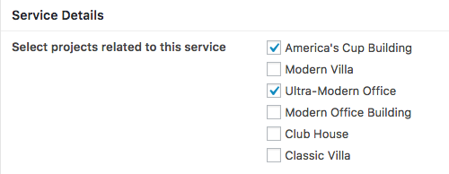
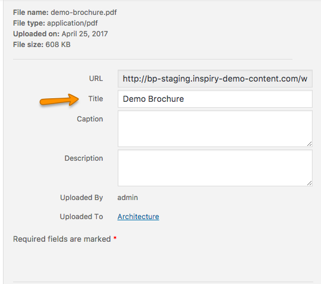
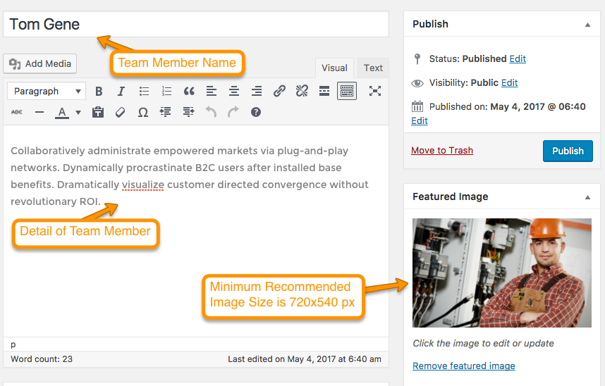
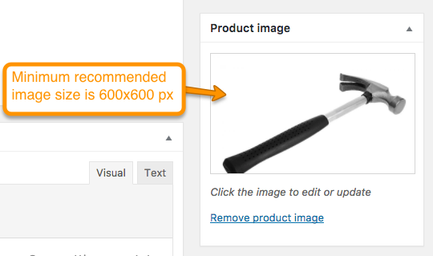
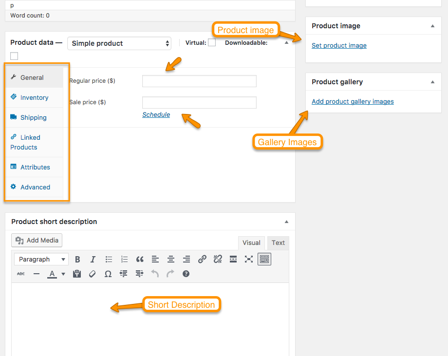

Add Blog Posts
Go to WordPress Admin > Posts > Add New

Enter to Post contents and Featured image with receommended size of 750x440 px and click on "Publish".

Add Services
Go to WordPress Admin > Services > Add New

Enter Service contents and Featured image with receommended size of 750x440 px.
 in Service Details select Projects which is related to this service. These Projects will be shown on service single page right sidebar.
in Service Details select Projects which is related to this service. These Projects will be shown on service single page right sidebar.

Click on "Add Media" button of Service Brochures to add service related brochures. These Brochures will be shown on service single page right sidebar.

Select the file and edit Title as given in screenshot below.

You can add as many Brochures as you want. Click on "Publish" and the service has been added.
Add Projects
Go to WordPress Admin > Projects > Add New

Enter Project contents and Featured image with receommended size of 1140x760 px.

If Project Details add Project related details as shown below in image. If checkbox is checked, Project will be shown in featured section.

When all details are completed click "Publish" button.
Add Team Members
Go to WordPress Admin > Team > Add New Member

Add Team Member details and featured image with recommended size of 720x540 px. 
Add Member's Designation and Social Links as shown in image below.

Click on "Publish" and the Team Member has been added.
Add Testimonials
Need Quick and Easy Testimonials plugin to be installed and activated.
Go to WordPress Admin > Testimonials > Add New Member

Add Testimonials details with featured image of size 150x150 px. You can add your gravatar by giving email address.

Add Products
Need WooCommerce plugin to be installed and activated.
Go to WordPress Admin > Products > Add New Product

Add Product name and contents. 
Set product image and gallery images. If you want to learn about product image sizes, consult Basic Setup > Setup WooCommerce in documentation. When all completed click "Publish" to add the product. 